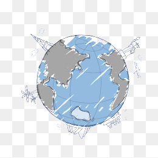
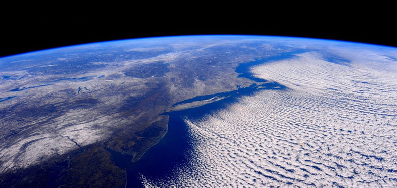

地球（Earth）是太阳系八大行星之一，按离太阳由近及远的次序排为第三颗，也是太阳系中直径、质量和密度最大的类地行星，距离太阳1.5亿公里。地球自西向东自转，同时围绕太阳公转。现有40~46亿岁， [1] 它有一个天然卫星——月球，二者组成一个天体系统——地月系统。46亿年以前起源于原始太阳星云。
地球赤道半径6378.137千米，极半径6356.752千米，平均半径约6371千米，赤道周长大约为40076千米，呈两极稍扁赤道略鼓的不规则的椭圆球体。地球表面积5.1亿平方公里，其中71%为海洋，29%为陆地，在太空上看地球呈蓝色。
地球内部有核、幔、壳结构，地球外部有水圈、大气圈以及磁场。地球是目前宇宙中已知存在生命的唯一的天体，是包括人类在内上百万种生物的家园。